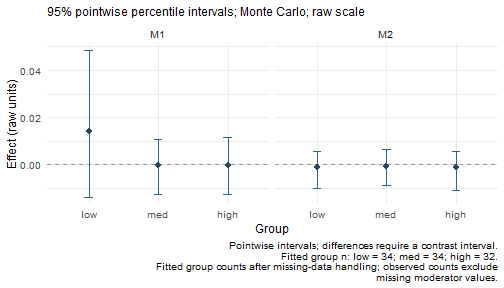
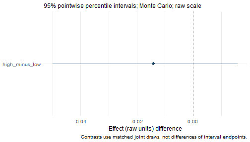

Working with categorical predictors
Source:vignettes/CategoricalPredictors.Rmd
CategoricalPredictors.RmdSupported variable roles
| Role | Supported representation |
|---|---|
| Outcome and mediators | Numeric measures analyzed as continuous responses |
| Within-subject covariates | Paired numeric measures |
| Between-subject covariates | Numeric measures or unordered factors |
| Moderator | One numeric measure or one unordered factor with two or more levels |
Categorical support concerns predictors. It does not add binary or ordinal outcome models, thresholds, or categorical links. A numerically coded binary outcome would still be analyzed as continuous. In the staged interface, character predictors and ordered factors must be converted explicitly; use an unordered factor only when categories should be treated as nominal.
Choose the reference category
The simulated example_data has 100 complete rows and 14
columns. Its Group variable is already a factor, originally
ordered as high, med, low. These
are nominal labels in artificial data, not observed subgroups of the
manuscript dataset. Here we select low as the
reference.
data(example_data)
dat <- example_data
dat$Group <- factor(
dat$Group,
levels = c("low", "med", "high")
)
table(dat$Group)
#>
#> low med high
#> 34 34 32
levels(dat$Group)
#> [1] "low" "med" "high"Three categories require two indicators: W1 = 1 for
med and W2 = 1 for high; both are
zero for low. Indicators are not centered. Coding uses
treatment contrasts regardless of the global R contrast option. For a
binary factor the first level is likewise the reference and one
indicator is created.
Use this explicit factor declaration for categorical covariates and
moderators in both interfaces. For binary groups,
factor(x, levels = c(0, 1)) selects 0 as the reference;
factor(x, levels = c(1, 0)) selects 1. Set the levels
before fitting so the intended categories and reference group are
recorded in the model.
Existing default recognition rules are retained for compatibility.
The staged interface treats numeric 0/1 predictors as continuous, while
the one-call wsMed() interface retains automatic 0/1
detection. Explicit factors avoid relying on those defaults. The
one-call C_type and W_type arguments remain
available for an explicit override. Both interfaces explain their
numeric 0/1 moderator decision in a message, retained in
fit$diagnostics$input_notes. These messages do not alter
coding.
Fit categorical moderated mediation
This parallel model has two mediators. Group main effects enter every
difference equation. MP = "b1" additionally allows the
A-to-Y difference slope to vary by group. The B-to-Y slope is constant,
although the indirect effect through B can still vary because its
condition effect varies by group.
result <- wsMed(
data = dat,
M_C1 = c("A1", "B1"),
M_C2 = c("A2", "B2"),
Y_C1 = "D1",
Y_C2 = "D2",
W = "Group",
MP = "b1"
)
print(result)
#> wsMed analysis
#> Model: P | DE | Observations: 100
#> Effects:
#> wsMed all | raw scale | mc
#> 95% percentile intervals; 20000 joint draws; SE from effect draws
#> Condition contrast: C2 - C1
#> Moderator: Group ; reference category = low
#> Estimate Std. Error
#> cp@1: Direct effect [Group = low] -0.089555 0.030978
#> indirect_1@1: M1 [Group = low] 0.013966 0.015561
#> indirect_2@1: M2 [Group = low] -0.001067 0.003754
#> total_indirect@1: Total indirect effect [Group = low] 0.012899 0.016006
#> total@1: Total effect [Group = low] -0.076657 0.028670
#> cp@2: Direct effect [Group = med] 0.026977 0.027498
#> indirect_1@2: M1 [Group = med] -0.000403 0.005403
#> indirect_2@2: M2 [Group = med] -0.000513 0.003547
#> total_indirect@2: Total indirect effect [Group = med] -0.000916 0.006460
#> total@2: Total effect [Group = med] 0.026060 0.028206
#> cp@3: Direct effect [Group = high] -0.043523 0.028476
#> indirect_1@3: M1 [Group = high] -0.000227 0.005610
#> indirect_2@3: M2 [Group = high] -0.001254 0.003959
#> total_indirect@3: Total indirect effect [Group = high] -0.001481 0.006860
#> total@3: Total effect [Group = high] -0.045004 0.029175
#> CI lower CI upper
#> cp@1: Direct effect [Group = low] -0.149674 -0.026957
#> indirect_1@1: M1 [Group = low] -0.013672 0.048313
#> indirect_2@1: M2 [Group = low] -0.010095 0.005841
#> total_indirect@1: Total indirect effect [Group = low] -0.015959 0.048148
#> total@1: Total effect [Group = low] -0.132546 -0.018987
#> cp@2: Direct effect [Group = med] -0.027358 0.080842
#> indirect_1@2: M1 [Group = med] -0.012561 0.010989
#> indirect_2@2: M2 [Group = med] -0.008625 0.006668
#> total_indirect@2: Total indirect effect [Group = med] -0.015266 0.012062
#> total@2: Total effect [Group = med] -0.029233 0.081462
#> cp@3: Direct effect [Group = high] -0.098881 0.012147
#> indirect_1@3: M1 [Group = high] -0.012696 0.011786
#> indirect_2@3: M2 [Group = high] -0.011018 0.005775
#> total_indirect@3: Total indirect effect [Group = high] -0.016720 0.012240
#> total@3: Total effect [Group = high] -0.101466 0.012298
#> Inference draws: 20000 retained of 20000 ; 0 excluded before effect extraction.
#> Fitted group n: low = 34; med = 34; high = 32.
#> Fitted group counts after missing-data handling; observed counts exclude
#> missing moderator values.
#> Use as.data.frame() for the full-precision table and metadata.
#> Post-fit admissibility: 1 of 1 ; excluded rows: 0
summary(result)
#> wsMed statistical summary
#> Model: P | Missing: DE | Observations: 100
#> Effects:
#> wsMed all | raw scale | mc
#> 95% percentile intervals; 20000 joint draws; SE from effect draws
#> Condition contrast: C2 - C1
#> Moderator: Group ; reference category = low
#> Estimate Std. Error
#> cp@1: Direct effect [Group = low] -0.089555 0.030978
#> indirect_1@1: M1 [Group = low] 0.013966 0.015561
#> indirect_2@1: M2 [Group = low] -0.001067 0.003754
#> total_indirect@1: Total indirect effect [Group = low] 0.012899 0.016006
#> total@1: Total effect [Group = low] -0.076657 0.028670
#> cp@2: Direct effect [Group = med] 0.026977 0.027498
#> indirect_1@2: M1 [Group = med] -0.000403 0.005403
#> indirect_2@2: M2 [Group = med] -0.000513 0.003547
#> total_indirect@2: Total indirect effect [Group = med] -0.000916 0.006460
#> total@2: Total effect [Group = med] 0.026060 0.028206
#> cp@3: Direct effect [Group = high] -0.043523 0.028476
#> indirect_1@3: M1 [Group = high] -0.000227 0.005610
#> indirect_2@3: M2 [Group = high] -0.001254 0.003959
#> total_indirect@3: Total indirect effect [Group = high] -0.001481 0.006860
#> total@3: Total effect [Group = high] -0.045004 0.029175
#> CI lower CI upper
#> cp@1: Direct effect [Group = low] -0.149674 -0.026957
#> indirect_1@1: M1 [Group = low] -0.013672 0.048313
#> indirect_2@1: M2 [Group = low] -0.010095 0.005841
#> total_indirect@1: Total indirect effect [Group = low] -0.015959 0.048148
#> total@1: Total effect [Group = low] -0.132546 -0.018987
#> cp@2: Direct effect [Group = med] -0.027358 0.080842
#> indirect_1@2: M1 [Group = med] -0.012561 0.010989
#> indirect_2@2: M2 [Group = med] -0.008625 0.006668
#> total_indirect@2: Total indirect effect [Group = med] -0.015266 0.012062
#> total@2: Total effect [Group = med] -0.029233 0.081462
#> cp@3: Direct effect [Group = high] -0.098881 0.012147
#> indirect_1@3: M1 [Group = high] -0.012696 0.011786
#> indirect_2@3: M2 [Group = high] -0.011018 0.005775
#> total_indirect@3: Total indirect effect [Group = high] -0.016720 0.012240
#> total@3: Total effect [Group = high] -0.101466 0.012298
#> Inference draws: 20000 retained of 20000 ; 0 excluded before effect extraction.
#> Fitted group n: low = 34; med = 34; high = 32.
#> Fitted group counts after missing-data handling; observed counts exclude
#> missing moderator values.
#> Use as.data.frame() for the full-precision table and metadata.
#>
#> Path coefficients:
#> Estimate Std. Error CI lower CI upper
#> cp@1: cp [Group = low] -0.08956 0.03098 -0.14967 -0.02696
#> b1@1: b1 [Group = low] -0.15866 0.15912 -0.47238 0.15442
#> d1@1: d1 [Group = low] -0.04619 0.09253 -0.22580 0.13807
#> b2@1: b2 [Group = low] -0.06480 0.08982 -0.23953 0.11299
#> d2@1: d2 [Group = low] -0.04119 0.08537 -0.21002 0.12575
#> a1@1: a1 [Group = low] -0.08802 0.02951 -0.14592 -0.03031
#> a2@1: a2 [Group = low] 0.01646 0.03087 -0.04418 0.07740
#> cp@2: cp [Group = med] 0.02698 0.02750 -0.02736 0.08084
#> b1@2: b1 [Group = med] -0.07904 0.16472 -0.40198 0.24594
#> d1@2: d1 [Group = med] -0.04619 0.09253 -0.22580 0.13807
#> b2@2: b2 [Group = med] -0.06480 0.08982 -0.23953 0.11299
#> d2@2: d2 [Group = med] -0.04119 0.08537 -0.21002 0.12575
#> a1@2: a1 [Group = med] 0.00510 0.02922 -0.05273 0.06201
#> a2@2: a2 [Group = med] 0.00792 0.03107 -0.05259 0.06936
#> cp@3: cp [Group = high] -0.04352 0.02848 -0.09888 0.01215
#> b1@3: b1 [Group = high] -0.06778 0.17203 -0.40586 0.26641
#> d1@3: d1 [Group = high] -0.04619 0.09253 -0.22580 0.13807
#> b2@3: b2 [Group = high] -0.06480 0.08982 -0.23953 0.11299
#> d2@3: d2 [Group = high] -0.04119 0.08537 -0.21002 0.12575
#> a1@3: a1 [Group = high] 0.00334 0.03023 -0.05573 0.06247
#> a2@3: a2 [Group = high] 0.01935 0.03177 -0.04247 0.08228
#> Post-fit admissibility: 1 of 1 ; excluded rows: 0
#> Tables: $effects, $coefficients; analysis settings: $info.
plot(result)
This uses the default 20,000 Monte Carlo draws and seed. The default
report includes all groups; the plot shows indirect effects in
factor-level order. summary() also includes conditional
path coefficients.
Conditional effects and group differences
Queries use factor labels, not indicator numbers. With
at omitted, all levels are returned. Specify labels
explicitly when their order matters.
effects <- wsmed_effects(result)
print(effects)
#> wsMed indirect | raw scale | mc
#> 95% percentile intervals; 20000 joint draws; SE from effect draws
#> Condition contrast: C2 - C1
#> Moderator: Group ; reference category = low
#> Estimate Std. Error CI lower CI upper
#> indirect_1@1: M1 [Group = low] 0.013966 0.015561 -0.013672 0.048313
#> indirect_2@1: M2 [Group = low] -0.001067 0.003754 -0.010095 0.005841
#> indirect_1@2: M1 [Group = med] -0.000403 0.005403 -0.012561 0.010989
#> indirect_2@2: M2 [Group = med] -0.000513 0.003547 -0.008625 0.006668
#> indirect_1@3: M1 [Group = high] -0.000227 0.005610 -0.012696 0.011786
#> indirect_2@3: M2 [Group = high] -0.001254 0.003959 -0.011018 0.005775
#> Inference draws: 20000 retained of 20000 ; 0 excluded before effect extraction.
#> Fitted group n: low = 34; med = 34; high = 32.
#> Fitted group counts after missing-data handling; observed counts exclude
#> missing moderator values.
#> Use as.data.frame() for the full-precision table and metadata.
plot(effects)
The default plot uses the factor order: low,
med, high. To change the order, supply
at = list(Group = c("high", "med", "low")) when extracting
effects. Use plot(effects, view = "forest") for horizontal
intervals.
Compare the indirect effect through A between high and
low by assigning weights to the corresponding effect
identifiers. The contrast uses matched joint draws, so its interval
includes covariance between the two effects.
tab <- as.data.frame(effects)
selected <- tab$effect == "indirect_1" & tab$at %in% c("low", "high")
weights <- setNames(ifelse(tab$at[selected] == "high", 1, -1),
tab$term[selected])
difference <- wsmed_contrasts(
effects,
list(high_minus_low = weights)
)
difference
#> wsMed contrasts | raw scale | mc
#> 95% percentile intervals; 20000 joint draws; SE from effect draws
#> Condition contrast: C2 - C1
#> Moderator: Group ; reference category = low
#> Contrast direction (signed weights):
#> high_minus_low: -1 * M1 [Group = low] +1 * M1 [Group = high]
#> Estimate Std. Error CI lower CI upper
#> high_minus_low -0.0142 0.0165 -0.0499 0.0158
#> Inference draws: 20000 retained of 20000 ; 0 excluded before effect extraction.
#> Use as.data.frame() for the full-precision table and metadata.
plot(difference)
The effect intervals in the group plot are pointwise. Their overlap
is not a test of equality; use the contrast interval to assess the
difference. The caption reports fitted group counts. With MI it reports
their range across completed datasets, rather than treating imputed
memberships as observed. The result table also provides
n.observed, n.fitted.min, and
n.fitted.max. These are descriptive participant counts, not
effective sample sizes for effects.
standardized <- wsmed_effects(
result,
scale = "marginal",
at = list(Group = c("low", "med", "high"))
)
standardized
#> wsMed indirect | marginal scale | mc
#> 95% percentile intervals; 20000 joint draws; SE from effect draws
#> Condition contrast: C2 - C1
#> Moderator: Group ; reference category = low
#> Standardization: effect / marginal model-implied SD(D2 - D1); condition contrast is unscaled.
#> Plug-in marginal outcome-difference SD: 0.169127
#> The denominator is not a moderator-specific conditional SD.
#> Estimate Std. Error CI lower CI upper
#> indirect_1@1: M1 [Group = low] 0.08257 0.08858 -0.07817 0.27693
#> indirect_2@1: M2 [Group = low] -0.00631 0.02137 -0.05736 0.03351
#> indirect_1@2: M1 [Group = med] -0.00238 0.03085 -0.07168 0.06239
#> indirect_2@2: M2 [Group = med] -0.00304 0.02025 -0.05015 0.03797
#> indirect_1@3: M1 [Group = high] -0.00134 0.03194 -0.07208 0.06723
#> indirect_2@3: M2 [Group = high] -0.00742 0.02252 -0.06254 0.03335
#> Inference draws: 20000 retained of 20000 ; 0 excluded before effect extraction.
#> Fitted group n: low = 34; med = 34; high = 32.
#> Fitted group counts after missing-data handling; observed counts exclude
#> missing moderator values.
#> Use as.data.frame() for the full-precision table and metadata.Marginal standardization divides conditional indirect effects by the common model-implied SD of the outcome difference. It does not divide by a different within-group SD for each category. Factor labels and indicator coding remain fixed, while coefficients and the common SD vary together across simulation draws. See the standardization tutorial.
Optional: fit the same model in stages
The equivalent staged specification uses role names in its
interaction arrows. main_effects = "all_equations" matches
the one-call model, and interactions = "A -> Y" matches
MP = "b1". The inference seed below matches the default
one-call seed.
model <- wsmed_model(
outcome = c(before = "D1", after = "D2"),
mediators = list(
A = c(before = "A1", after = "A2"),
B = c(before = "B1", after = "B2")
),
moderator = list(
variable = "Group",
main_effects = "all_equations",
interactions = "A -> Y"
)
)
fit <- wsmed_fit(
model,
dat
)
inference <- wsmed_infer(
fit,
seed = 123
)
fit
#> wsMed fit: P | DE | 1 fitted dataset(s)
#> Observations: 100 of 100 input rows
#> Converged: 1 of 1
#> Condition contrast: after - before
#> Moderator: Group ; reference category = low
#> Post-fit admissibility: 1 of 1 ; excluded rows: 0Inspect the constructed data to check the indicator coding:
prepared <- wsmed_inspect(
fit,
"data"
)
unique(prepared[c("Group", "W1", "W2")])
#> Group W1 W2
#> 1 low 0 0
#> 2 high 0 1
#> 3 med 1 0
attr(prepared, "W_info")
#> $raw
#> [1] "Group"
#>
#> $dummy_names
#> [1] "W1" "W2"
#>
#> $dummy_map
#> $dummy_map$W1
#> [1] "low vs med"
#>
#> $dummy_map$W2
#> [1] "low vs high"In the mapping, low vs med means an indicator equal to
one for med and zero for low; its coefficient
is med minus low. Use
relevel(dat$Group, ref = "high") before fitting to choose a
different reference.
The two calls produce the same estimates and draws. See the staged workflow for what each object stores and how to reuse the fitted model for inference.
Categorical covariates
A categorical between-subject covariate uses the same reference
coding. This separate example adjusts for Group without
treating it as a moderator:
adjusted <- wsMed(
data = dat,
M_C1 = "A1",
M_C2 = "A2",
Y_C1 = "D1",
Y_C2 = "D2",
C = "Group"
)
print(adjusted)
#> wsMed analysis
#> Model: P | DE | Observations: 100
#> Effects:
#> wsMed all | raw scale | mc
#> 95% percentile intervals; 20000 joint draws; SE from effect draws
#> Condition contrast: C2 - C1
#> Covariate: Group ; reference category = low
#> Estimate Std. Error CI lower CI upper
#> cp: Direct effect -0.08738 0.02898 -0.14500 -0.03149
#> indirect_1: M1 0.01059 0.00948 -0.00568 0.03195
#> total_indirect: Total indirect effect 0.01059 0.00948 -0.00568 0.03195
#> total: Total effect -0.07679 0.02805 -0.13234 -0.02229
#> Inference draws: 20000 retained of 20000 ; 0 excluded before effect extraction.
#> Use as.data.frame() for the full-precision table and metadata.
#> Post-fit admissibility: 1 of 1 ; excluded rows: 0Missing categorical predictors
wsmed_fit() defaults to missing = "error".
Listwise deletion is available, but can discard otherwise useful
measurements. FIML can be used when categorical predictors are fully
observed; missing categorical predictors are unsupported and rejected by
the staged interface. Apply the same restriction in one-call
analyses.
For multiple imputation, impute raw variables before computing dummy
indicators and interactions. The following deliberately introduces
missingness into the simulated data. In the staged interface,
mi$method selects the method for numeric variables (here
PMM). Binary factors automatically use logistic regression; factors with
more than two levels use multinomial logistic regression. This setting
differs from the lower-level ImputeData() interface.
incomplete <- dat
incomplete$Group[c(3, 18, 37, 68, 89)] <- NA
incomplete$A2[c(8, 25, 43)] <- NA
mi_fit <- wsmed_fit(
model,
incomplete,
missing = "mi",
mi = list(
m = 5,
method = "pmm",
seed = 123
)
)
#> Warning: Internal MI uses main effects only and may be incompatible with
#> moderator interactions. Consider model-compatible external imputations via
#> completed; see the CompatibleImputation tutorial.
mi_inference <- wsmed_infer(
mi_fit,
method = "mc",
seed = 123
)
wsmed_effects(
mi_inference,
at = list(Group = c("low", "med", "high"))
)
#> wsMed indirect | raw scale | mc
#> 95% percentile intervals; 20000 joint draws; SE from effect draws
#> Condition contrast: after - before
#> Moderator: Group ; reference category = low
#> MI: per-imputation centering; first-imputation reporting reference.
#> Default MI uses main effects only; interactions may require model-compatible external imputations.
#> Estimate Std. Error CI lower CI upper
#> indirect_1@1: A [Group = low] 0.009419 0.014976 -0.018085 0.042565
#> indirect_2@1: B [Group = low] -0.000937 0.003624 -0.009837 0.005794
#> indirect_1@2: A [Group = med] -0.000454 0.005792 -0.013511 0.011684
#> indirect_2@2: B [Group = med] -0.000255 0.003600 -0.008566 0.007084
#> indirect_1@3: A [Group = high] 0.000237 0.005750 -0.011954 0.013518
#> indirect_2@3: B [Group = high] -0.001447 0.004076 -0.011492 0.005867
#> Inference draws: 20000 retained of 20000 ; 0 excluded before effect extraction.
#> Fitted group n: low = 34-36; med = 31-33; high = 32-34.
#> Fitted group counts: range across completed datasets; observed counts exclude
#> imputed moderator values.
#> Use as.data.frame() for the full-precision table and metadata.Imputation and inference have separate seeds. Five imputations keep this example small; choose the number and imputation model for the actual analysis. MI with bootstrap inference is not implemented. For MI, the package retains the current per-imputation centering and first-imputation reporting reference.